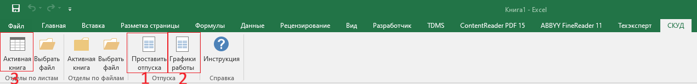

📋 Инструкция пользователя
🎯 Общее описание
Надстройка СКУД предназначена для автоматической обработки отчета из системы СКУД, проставления отпусков и графиков работы.
📸 Интерфейс надстройки

Рисунок 1: Интерфейс надстройки СКУД в Excel
На скриншоте отмечены цифрами кнопки, которые необходимо использовать в строгом порядке (см. раздел "Порядок действий" ниже).
⚠️ ВАЖНО! Порядок действий
⚠️ СТРОГО соблюдайте следующий порядок действий:
- Проставить отпуска - сначала необходимо проставить причины отсутствия сотрудников из файла отпусков
- Графики работы - затем проставить графики работы сотрудников из файла графиков
- Активная книга (в группе "Отделы по листам") - только после выполнения первых двух шагов можно создавать отчеты по отделам
Нарушение этого порядка может привести к некорректной обработке данных!
🔧 Основные функции
1. Отделы по листам
Назначение: Создает один файл Excel с отдельными листами для каждого отдела из исходных данных СКУД.
Как работает:
- Система анализирует данные в исходном файле и группирует их по подразделениям (отделам)
- Для каждого отдела создается отдельный лист в новом файле Excel
- Все листы сохраняются в одном файле, что удобно для просмотра и анализа данных по всем отделам
- Файл сохраняется в той же папке, где находится исходный файл
Использование:
- Активная книга: Обрабатывает текущую открытую книгу Excel. Убедитесь, что книга содержит данные выгрузки из СКУД с правильной структурой колонок.
- Выбрать файл: Позволяет выбрать файл Excel для обработки через диалоговое окно. Используйте этот вариант, если исходный файл еще не открыт в Excel.
Результат: Создается новый файл с именем, содержащим дату и время создания, в котором каждый отдел представлен на отдельном листе.
2. Отделы по файлам
Назначение: Создает отдельный файл Excel для каждого отдела в папке с исходным файлом.
Как работает:
- Система анализирует данные в исходном файле и группирует их по подразделениям (отделам)
- Для каждого отдела создается отдельный файл Excel
- Все файлы сохраняются в той же папке, где находится исходный файл
- Имена файлов формируются автоматически на основе названий отделов
Использование:
- Активная книга: Обрабатывает текущую открытую книгу Excel. Убедитесь, что книга содержит данные выгрузки из СКУД с правильной структурой колонок.
- Выбрать файл: Позволяет выбрать файл Excel для обработки через диалоговое окно. Используйте этот вариант, если исходный файл еще не открыт в Excel.
Результат: Создается несколько файлов Excel (по одному на каждый отдел) в папке с исходным файлом. Это удобно, когда нужно работать с отчетами по отделам отдельно или передавать их разным пользователям.
Отличие от "Отделы по листам": В режиме "Отделы по файлам" каждый отдел получает свой отдельный файл, а в режиме "Отделы по листам" все отделы находятся в одном файле на разных листах.
📊 Структура данных
Важно! Исходный файл выгрузки из СКУД должен содержать следующие колонки:
- 1. Фирма
- 2. Подразделение
- 3. Сотрудник
- 4. Должность
- 5. Таб.№
- 6. Дата
- 7. Находился в здании
- 8. Прогулял
- 9. Причины не выхода
- 10. Комм. причины отсутствия
- 11. Начало дня
- 12. Конец дня
- 13. Работа в праздничные дни
- 14. Фактическая переработка
🆘 Поддержка
При возникновении проблем или вопросов обращайтесь к разработчику.
Разработчик: Малинин Владислав
e-mail: vladmalinin93@gmail.com
Телефон: +7 (951) 187-67-10